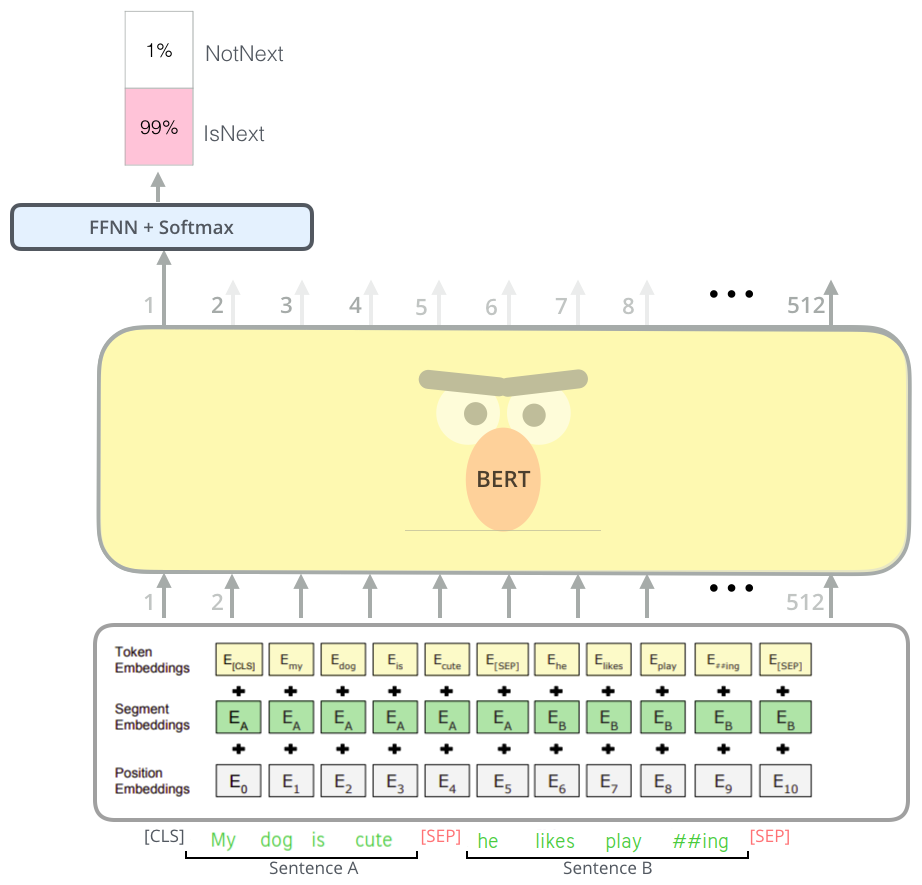

2020
-
GPT-3
GPT-3 is an enormous model built on the transformer-decoder architecture published in 2020 by OpenAI in this paper: “Language Models are Few-Shot Learners” whose title is very indicative of what the paper wanted to show. The paper didn’t provide any new architecture, they used the same architecture as GPT-2. They just made it way bigger and trained over more data. …
-
Adapter Fusion
AdapterFusion is a new variant of the Adapter layers where it extends the functionality of adapters to be multi-tasking instead of being per a single task. AdapterFusion is proposed by researchers in UKP Lab, Technical University of Darmstadt and New York University and published in their paper: AdapterFusion: Non-Destructive Task Composition for Transfer Learning in May 2020. …
-
ETC: Extended Transformer Construction
ETC stands for “Extended Transformer Construction” which is a new Transformer architecture for language modeling over long sentences and achieves state-of-the-art performance on various long-sentence tasks as shown in the following table. ETC was proposed by Google in 2020 and published in this paper: “ETC: Encoding Long and Structured Inputs in Transformers”. The official code for this paper can be found on Google Research’s official GitHub repository: research-etc-model . …
-
Longformer: Long Transformer
Transformer-based models are unable to process long sequences due to their self-attention operation, which has a time complexity of $O\left( n^{2} \right)$ where $n$ is the input length. Longformer stands for “Long Transformer” which is a encoder-side transformer with a novel attention mechanism that scales linearly with sequence length making it easy to process documents of thousands of tokens or longer. Longformer was proposed by Allen Institute in 2020 and published in their paper: Longformer: The Long-Document Transformer. The official code for this paper can be found in the official GitHub page of Allen Institute: allenai/longformer. …
-

ELECTRA
ELECTRA stands for “Efficiently Learning an Encoder that Classifies Token Replacements Accurately” which is a discriminator language model unlike the widely-used generative language models such as BERT, GPT, ...etc. ELECTRA was proposed by Stanford University in collaboration with Google Brain in 2020 and published in their paper: ELECTRA: Pre-training text Encoders. The official code of this paper can be found on Google Research’s official GitHub repository: google-research/electra. …
-
DistilBERT
DistilBERT is a smaller, faster, cheaper and lighter version of BERT created by Hugging Face in March 2020 and published in this paper: “DistilBERT, a distilled version of BERT: smaller, faster, cheaper and lighter”. In this paper, they used knowledge distillation to reduce the size of a BERT by 40%, while retaining 97% of its language understanding capabilities and being 60% faster. This was possible by using a triple loss function that combines language modeling, distillation and cosine-distance losses. …
2019
-
BART
BART stands for “Bidirectional Auto-regressive Transformer” which is a pre-training scheme for models created by Facebook AI in 2019 and published in this paper: “BART: Denoising Sequence-to-Sequence Pre-training for Natural Language Generation, Translation, and Comprehension”. Pre-training is the process of training a model with one task that is able to help it form parameters that can be used to make other tasks easier. And this is what we, human beings, do. We use our old knowledge of what we have learned in the past to understand new knowledge and handle a variety of new tasks. …
-
Google's T5
T5 stands for “Text-to-Text Transfer Transformer” which is a text-to-text framework proposed by Google in 2019 and published in this paper: “Exploring the Limits of Transfer Learning with a Unified Text-to-Text Transformer”. The official code for this paper can be found on Google Research’s official GitHub repository: google-research/text-to-text-transfer-transformer. …
-
ALBERT
ALBERT, stands for “A Lite BERT”, reduced version of BERT which is a smaller, faster, cheaper and easier to scale. ALBERT was created by Google & Toyota Technical Institute in February 2019 and published in this paper: “ALBERT: A Lite Bert For Self-Supervised Learning Of Language Representations” and you can fine the official code for this paper in Google Research’s official GitHub repository: google-research/ALBERT. …
-

TinyBERT
TinyBERT is a distilled version of BERT using a novel knowledge distillation method called “Transformer distillation” that was specially designed for Transformer models such as BERT. TinyBERT was proposed in 2019 by Huawei Noah’s Ark Lab and published in this paper under the same name “TinyBERT: Distilling Bert For Natural Language Understanding”. The official code for this paper can be found in the following GitHub repository: TinyBERT. …
-

StructBERT
StructBERT stands for “Structural BERT” which is an extension of BERT created by incorporating language structures into pre-training. StructBERT was proposed in 2019 by Alibaba Group and published in their “StructBERT: Incorporating Language Structures Into Pre-Training For Deep Language Understanding” paper. The official code for this paper can be found in the following GitHub repository: alibaba/StructBERT. …
-
Big Models pollute Earth
Recent progress in hardware and methodology for training neural networks has ushered in a new generation of large networks. These models have obtained notable gains in accuracy across many NLP tasks. However, these accuracy improvements depend on the availability of exceptionally large computational resources that necessitate similarly substantial energy consumption. As a result, these models are costly to train both financially and environmentally. …
-

RoBERTa
RoBERTa, stands for “Robustly optimized BERT approach”, is an approach to train BERT created by Facebook AI in 2019 and published in this paper: “RoBERTa: A Robustly Optimized BERT Pretraining Approach”. The official code for this paper can be found on Facebook’s FairSeq official GitHub repository: fairseq/roberta. …
-
SpanBERT
SpanBERT is a model created by Facebook AI and Allen Institute in January 2019 and published in this paper “SpanBERT: Improving Pre-training by Representing and Predicting Spans”. SpanBERT is just an extension to BERT where it better represents and predict continuous random spans of text, rather than random tokens. This is crucial since many NLP tasks involve spans of text rather than single tokens. SpanBERT is different from BERT in both the masking scheme and the training objectives: …
-
XLNet
XLNet stands for “Extra-Long Net” which is a model that integrates both GPT and BERT introduced in 2019 by Google Brain and published in this paper: “XLNet: Generalized Autoregressive Pretraining for Language Understanding” by the same authors of Transformer-XL. The official code for this paper can be found in the following GitHub repository: xlnet. …
-
MASS
MASS, stands for “Masked Sequence to Sequence”, is a pre-training scheme proposed by Microsoft in 2019 and published in this paper: “MASS: Masked Sequence to Sequence Pre-training for Language Generation” and the code is publicly available on Microsoft’s official account on GitHub. Inspired by BERT, MASS encoder takes a sentence with a masked fragment as input, and its decoder predicts this masked fragment. …
-
GPT-2
GPT-2 stands for “Generative Pre-trained Transformer” which is a language model published in this paper: “Language Models are Unsupervised Multitask Learners” by OpenAI in 2019. In the paper, they tried to demonstrate that language models can perform down-stream tasks such as (question answering, machine translation, reading comprehension, and summarization) in a zero-shot setting – without any parameter or architecture modification. …
-
Adapter Layers
At the current moment, the norm in NLP involves downloading and fine-tuning pre-trained models consisting of hundreds of millions, or even billions of parameters. Modifying these models, no matter how simple the modification is, requires re-training the whole model. And re-training these huge models is expensive, slow, and time-consuming, which impedes the progress in NLP. Adapters are one way to fix this problem. …
-
Transformer-XL
Transformer-XL, stands for “Transformer Extra Long”, is a language model published in this paper: “Transformer-XL: Attentive Language Models Beyond a Fixed-Length Context” by Google Brain in 2019.The official code for this paper can be found in the following GitHub repository: transformer-xl . …
2018
-

BERT
BERT stands for “Bidirectional Encoder Representations from Transformers” which is a model published by researchers at Google in this paper: “BERT: Pre-training of Deep Bidirectional Transformers for Language Understanding” in 2018. It has caused a stir in the NLP community by presenting state-of-the-art results in a wide variety of NLP tasks, including Question Answering (SQuAD v1.1), Natural Language Inference (MNLI), and others. …
-

GPT
Transform is a state-of-the-art architecture for machine translation. OpenAI tried to use this architecture for the language modeling task in this paper “Improving Language Understanding by Generative Pre-Training” under the name “Improving Language Understanding by Generative Pre-Training” which was published in 2018. Pre-training is the process of training a model with one task (language modeling in the paper) that is able to help it form parameters that can be used to make other tasks easier (four other tasks: natural language inference, question answering, semantic similarity, and text classification). …
2016
-

GCNN: Gated CNN
One of the major defects of Seq2Seq models is that it can’t process words in parallel. For a large corpus of text, this increases the time spent translating the text. CNNs can help us solve this problem. In this paper: “Language Modeling with Gated Convolutional Networks”, proposed by FAIR (Facebook AI Research) in 2017, the researchers developed a new architecture that uses gating mechanism over stacked convolution layers that outperforms the Seq2Seq model. …
2011
-

Tree Recursive Neural Network
Tree Recursive Neural Network is a model created by Richard Socher et al. and published in this paper: Parsing Natural Scenes and Natural Language with Recursive Neural Networks. The main idea behind Tree Recursive Neural Network is to provide a sentence embedding that could represent the meaning of the sentence the same way we did with word embedding. So, two sentences that of different words like “the country of my birth” and “the place where I was born” will have similar vector despite having totally different words. The meaning vector of a sentence is determined by actually two things: …
2003
-

Neural N-gram Language Model
As we discussed before, the n-gram language model has a few problems like the data sparsity and the big storage need. That’s why these problems were first tackled by Bengio et al in 2003 and published under the name “A Neural Probabilistic Language Model”, which introduced the first large-scale deep learning for natural language processing model. This model learns a distributed representation of words, along with the probability function for word sequences expressed in terms of these representations. The idea behind this architecture is to deal with the language model task as if it is a classification problems where: …
1985
-
RNN: Recurrent Neural Networks
The neural n-gram language model we've seen earlier was trained using the a window-sized subset of the previous tokens. And this falls short with long sentences as where the contextual dependencies are longer than the window size. Now, we need a model that is able to capture dependencies outside the window. In other words, we need a system that has some kind of memory to save these long dependencies. …